DeepEP V1 Low-Latency 方案详解
六篇学习目录 · IBGDA 原理前置教程 · CPU-assisted 与部署 · HTML 阅读版
本文对应仓库中的 V1 legacy
low_latency_dispatch/low_latency_combine路径。它面向推理解码阶段的小 batch，使用 NVSHMEM IBGDA、固定上界缓冲、expert-major 输出和可拆分的 send/recv phase，追求端到端微秒级延迟及通信与计算重叠。
0. 研究范围、基线与证据等级
本文采用“双基线”，避免把教程提交误当成 DeepEP 上游源码提交：
| 基线 | commit / 日期 | 适用范围 |
|---|---|---|
| 本地文档基线 | f99f06868616c6fa96f83ff1caa5f0231f9ee3bc（2026-08-25） |
教程提交 Add DeepEP implementation tutorials，仅新增三篇 implementation 文档；决定本文解释稿的版本 |
| 上游源码基线 | 01dc3aaac82068020353dce2c302e38153c0bfaa（2026-08-04，origin/main） |
f99f068... 的父提交；本文所有 C++/CUDA/Python、测试和布局事实以此源码树为准 |
V1 已处于 legacy 路径；后续版本可能改变环境变量、内核布局或公开 API，因此复现实验时必须同时记录本地文档基线和上游源码基线。
文中的结论分为三类：
| 标签 | 含义 | 典型证据 |
|---|---|---|
| 源码可证 | 可由上游源码基线 01dc3aaa... 的 C++/CUDA/Python 与测试直接确认 |
结构体布局、地址公式、phase 位、断言、kernel 分支 |
| 官方资料背景 | NVIDIA/DeepSeek 的官方文档或论文定义的机制/部署背景 | NVSHMEM 对称堆与排序语义、IBGDA 数据路径、DeepSeek-V3 解码部署 |
| 推导/调优假设 | 由源码组合得到的协议解释，或需要在目标机器上实验验证的性能判断 | 同 QP payload→flag 的完成协议、最佳 QP 数、重叠收益边界 |
特别注意：本文不会把“某个 flag 已可见”泛化成任意 RDMA 写都已全局可见。第 3.4 节会分别说明 NVSHMEM 公共 API 的保证，以及 DeepEP 直接构造 IBGDA WQE 后由源码推导出的内部约束。
**源码摘录约定：**每个机制都给出项目内文件、符号或行号链接。代码块中的
// ...、/* ... */只压缩与当前知识点无关的参数、循环或字段，不能脱离链接指向的完整源码直接编译；凡是教学伪代码都会明确标注“伪代码”，未标注者均保持真实控制分支和变量语义。
0.1 为什么这条路径专门面向 decode
官方资料背景： DeepSeek-V3 技术报告描述的解码部署使用 EP320、每张 GPU 放置一个冗余或路由 expert，并让 dispatch/combine 直接走 IB 点到点通信与 IBGDA；报告同时指出单 expert 的解码 batch 通常不超过 256，并采用两个 micro-batch，把一个 batch 的 Attention 与另一个 batch 的 dispatch、MoE、combine 重叠。这个“小消息、高频、需要让出 SM”的约束正是 low-latency 路径的设计背景。
但需保留两个边界：
- 报告描述的是 DeepSeek-V3 线上部署；本仓库 V1 实现的 expert 数、拓扑和调度细节可以不同。
- decode 的双 micro-batch overlap 与 prefill/训练的通信-计算重叠不是同一个调度问题，不能只凭吞吐 benchmark 推断端到端 token latency。
0.2 本地扩展阅读
DeepEP_LowLatency_IBGDA_DeepDive.md：聚焦 IBGDA、WQE、QP 和 low-latency 内核细节。DeepEP_V1_Communication_DeepDive_Restored_CN.md：横向解释 V1 normal 与 low-latency 通信体系。
两篇与本文同属本地文档基线 f99f068...，解释对象是其父提交、上游源码基线 01dc3aaa...；它们适合作为阅读导航，发生冲突时应以该上游源码树、测试和官方语义为准。
0.3 先回答核心问题：Low-Latency 是否使用 IBGDA
是，而且 IBGDA 是这条路径形成“后台 RDMA 窗口”的核心。 V1 normal/SM 的跨节点路径也使用 IBGDA；区别不在“有没有 IBGDA”，而在 GPU 如何组织通信进度：
| 路径 | IBGDA 的使用范围 | GPU progress 组织 | 可近似不占通信 SM 的区间 |
|---|---|---|---|
| V1 normal / SM | 只在跨节点的同号 GPU 之间；节点内仍是 CUDA IPC/NVLink | 常驻 sender/coordinator/forwarder/receiver block 管理分层队列 | 没有覆盖整个操作的 0-SM 窗口 |
| V1 low-latency | 初始化全局 NVSHMEM PE；不可 P2P 的 peer 用 IBGDA，本地 peer 可选 P2P bypass | 短 SEND kernel 发请求，短 RECV kernel 收取 | 仅 SEND 已返回、RECV 尚未启动的 NIC in-flight 区间 |
因此，“两条 V1 路径都使用 IBGDA”不等于“两条路径都不占通信 SM”，也不等于每一条消息都一定经过 NIC。
0.3.1 没有 IBGDA：逐消息 CPU/proxy 在关键路径
GPUDirect RDMA 只说明 NIC 能直接 DMA GPU HBM；它没有自动回答“谁构造并提交 RDMA work request”。传统 proxy transport 的典型热路径是：
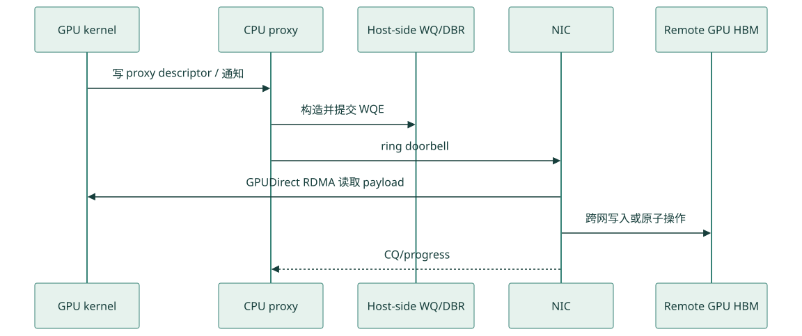
查看 Mermaid 图源码
sequenceDiagram
participant K as GPU kernel
participant P as CPU proxy
participant Q as Host-side WQ/DBR
participant N as NIC
participant R as Remote GPU HBM
K->>P: 写 proxy descriptor / 通知
P->>Q: 构造并提交 WQE
P->>N: ring doorbell
N->>K: GPUDirect RDMA 读取 payload
N->>R: 跨网写入或原子操作
N-->>P: CQ/progress它的优势是平台适配和 CPU 侧资源管理相对直接，也能运行在 NIC doorbell 不能映射给 GPU 的环境；代价是细粒度消息经历 GPU→CPU 通知、proxy 调度和 CPU→NIC 提交，CPU 抖动、NUMA 放置和控制流往返会进入尾延迟。
0.3.2 三种模式不能混为一谈
| 模式 | 谁生成 WR/WQE | 谁敲 NIC doorbell | 是否属于 IBGDA |
|---|---|---|---|
| 普通 proxy transport | CPU proxy | CPU proxy | 否 |
| CPU-assisted IBGDA | GPU | CPU 只辅助异步 post-send/doorbell | 是 |
| traditional IBGDA | GPU | GPU | 是 |
本仓库 docs/nvshmem.md 同时给出 traditional IBGDA 和基于 GDRCopy/gdrdrv 的 CPU-assisted asynchronous post-send。NVIDIA 官方把后者定义为 proxy-based networking 与 traditional IBGDA 的中间模式：GPU 仍生成 work request，CPU 只接管 doorbell-ringing。DeepEP 要求 NVSHMEM 选择 IBGDA，但最终 post-send 模式由 NVSHMEM、驱动和部署决定。
无论哪一种 IBGDA，host 都没有“完全消失”。初始化阶段仍需 CPU 完成 communicator bootstrap、QP/CQ 创建、GPU 内存注册、lkey/rkey 与 peer heap base 交换、资源回收；被移出关键路径的是每条消息的常规控制面。
0.3.3 DeepEP 在哪里打开 IBGDA
入口是 deep_ep/buffers/legacy.py:103-135：
if self.runtime.get_num_rdma_ranks() > 1 or low_latency_mode:
os.environ['NVSHMEM_DISABLE_P2P'] = (
'0' if allow_nvlink_for_low_latency_mode else '1')
os.environ['NVSHMEM_IB_ENABLE_IBGDA'] = '1'
os.environ['NVSHMEM_IBGDA_NUM_RC_PER_PE'] = f'{num_qps_per_rank}'
self.nvshmem_qp_depth = int(
os.environ.get('NVSHMEM_QP_DEPTH', '1024'))
os.environ['NVSHMEM_QP_DEPTH'] = str(self.nvshmem_qp_depth)
os.environ['NVSHMEM_CUMEM_GRANULARITY'] = f'{2 ** 29}'
self.runtime.sync(device_ids, ipc_handles, root_unique_id)or low_latency_mode说明即使只有一个节点，LL 构造也会建立 NVSHMEM 环境；normal 只有num_rdma_ranks>1才需要它。NVSHMEM_DISABLE_P2P=0允许同节点 peer 取得 P2P 指针；默认允许，但源码警告它与 hook overlap 的资源/顺序条件并不总兼容。NVSHMEM_IB_ENABLE_IBGDA=1请求 IBGDA；NUM_RC_PER_PE设置每个 peer 的 RC QP 数，LL 要求它与 local expert 数匹配。QP_DEPTH是在途 WQE 容量，不是无限消息队列。- 当前仓库没有设置
NVSHMEM_IBGDA_NIC_HANDLER=gpu。traditional 还是 CPU-assisted 应结合nvshmem-info、驱动配置和日志确认。
C++ 同步阶段把 LL 的 NVSHMEM PE 定义为全局 EP rank，并在 symmetric heap 中分配 RDMA buffer（csrc/legacy/buffer.hpp:255-285）：
auto nvshmem_rank = low_latency_mode ? rank : rdma_rank;
auto num_nvshmem_ranks = low_latency_mode ? num_ranks : num_rdma_ranks;
nvshmem::init(root_unique_id, nvshmem_rank, num_nvshmem_ranks,
low_latency_mode ? LEGACY_NUM_MAX_NVL_PEERS : 0);
rdma_buffer_ptr = nvshmem::alloc(
num_rdma_bytes, LEGACY_NUM_BUFFER_ALIGNMENT_BYTES);
cudaMemset(rdma_buffer_ptr, 0, num_rdma_bytes);
nvshmem::barrier(true);LL 以 <global rank, world size> 建 PE；normal 只以跨节点 rdma_rank 建同号 GPU 的 PE；nvshmem::alloc 返回 NIC 注册的对称地址空间；清零后的 barrier 保证所有 PE 完成初始化。DeepEP 中看不到 ibv_reg_mr，因为 registration、QP 和 key table 在 NVSHMEM transport 内部建立；普通 PyTorch tensor 不会因此自动成为 RDMA symmetric buffer。
0.3.4 GPU 如何从 symmetric 地址生成 WQE
真实调用链位于 csrc/kernels/legacy/ibgda_device.cuh：
low-latency SEND warp
-> nvshmemi_ibgda_put_nbi_warp
-> ibgda_get_rc(dst_pe, expert_qp_id)
-> ibgda_get_lkey_and_rkey
-> ibgda_reserve_wqe_slots
-> ibgda_write_rdma_write_wqe
-> ibgda_submit_requests
-> ready/prod index -> DBR -> doorbellQP 选择和远端地址翻译的最小源码（ibgda_device.cuh:81-86、205-232）：
auto qp = &state->globalmem.rcs[
pe * num_rc_per_pe * state->num_devices_initialized +
id % (num_rc_per_pe * state->num_devices_initialized)];
uint64_t roffset = raddr - heap_start;
*out_raddr = reinterpret_cast<uint64_t>(
nvshmemi_device_state_d.peer_heap_base_remote[dst_pe]) + roffset;
*out_rkey = device_key.key;
return min(lchunk_size, rchunk_size);pe选择目标 rank，LL 的id是 local expert，从而让一个 expert 的 payload 与 count/flag 落到同一 QP。- symmetric pointer 先减本 PE heap base 得 offset，再加目标 PE remote heap base；不是把本地原始虚拟地址原样发给远端。
- lkey 授权 NIC 读本地 GPU buffer，rkey 授权写远端注册区。
- 返回两个 registration chunk 剩余长度的较小值；跨 chunk 的一个逻辑 put 会拆成多个 WQE。
warp 共同填 WQE，lane 0 负责预留与提交（ibgda_device.cuh:335-380）：
if (lane_id == 0)
base_wqe_idx = ibgda_reserve_wqe_slots(qp, num_wqes);
base_wqe_idx = __shfl_sync(0xffffffff, base_wqe_idx, 0);
if (lane_id < num_wqes) {
auto wqe_idx = base_wqe_idx + lane_id;
auto wqe_ptr = ibgda_get_wqe_ptr(qp, wqe_idx);
ibgda_write_rdma_write_wqe(qp, my_laddr, my_lkey,
my_raddr, my_rkey, my_chunk_size,
wqe_idx, &wqe_ptr);
}
__syncwarp();
if (lane_id == 0)
ibgda_submit_requests<kAlwaysDoPostSend>(
qp, base_wqe_idx, num_wqes, message_idx);ibgda_submit_requests 先 __threadfence()，再用 CAS 等待此前预留的 WQE 形成无空洞 ready 前缀。traditional IBGDA 更新 DBR 并 ring NIC doorbell；CPU-assisted 模式推进 GPU-visible producer index，由 CPU helper 异步 post-send。默认 payload 可按 4 条消息批量 doorbell；随后的 count/flag AMO 使用强制 post。函数返回表示 WQE 已写入并发布给 transport/NIC 可获取，不表示 NIC 已完成远端 DMA。
0.3.5 Low-Latency 怎样使用：payload 后发布 count/flag
Dispatch SEND 的实际分支在 internode_ll.cu:253-277：
const auto dst_p2p_ptr = nvshmemi_get_p2p_ptr(dst_ptr, rank, dst_rank);
if (dst_p2p_ptr == 0) {
nvshmemi_ibgda_put_nbi_warp(
dst_ptr, src_ptr, num_bytes_per_msg, dst_rank,
dst_expert_local_idx, lane_id, slot_idx);
} else {
UNROLLED_WARP_COPY(/* peer NVLink/P2P copy */);
}P2P pointer 为 0 才走 IBGDA；否则 GPU warp 直接复制到 peer symmetric heap。payload 都完成本地构造/提交后，负责该 expert 的 warp 在相同 dst_expert_local_idx QP 上发布计数（internode_ll.cu:323-349）：
while (ld_acquire_global(atomic_finish_counter_per_expert +
responsible_expert_idx)
!= LEGACY_FINISHED_SUM_TAG * 2) { }
nvshmemi_ibgda_amo_nonfetch_add(
reinterpret_cast<int*>(dst_ptr), -num_tokens_sent - 1,
dst_rank, dst_expert_local_idx);负编码 -count-1 让 0 唯一表示“尚未到达”，即使发送 0 token 也会发布 -1。Combine 同样先 put expert 输出，再在相同 local_expert_idx QP 上对 recv_flag 做 AMO；RECV 用 system-scope acquire 轮询后才消费 payload。这里依赖 DeepEP 当前 helper 的 ready 顺序、同一 RC QP 和强制发布，不可推广为任意不同 QP 的 nonblocking put 都天然被随后 flag 排序。
0.3.6 使用与不使用的收益、成本和 0-SM 边界
| 维度 | 无 IBGDA proxy | IBGDA / CPU-assisted IBGDA |
|---|---|---|
| 小消息控制延迟 | CPU 调度与往返进入关键路径 | GPU 路由后生成 WR；CPU-assisted 只辅助 doorbell |
| 消息率与融合 | proxy 容易成为细粒度瓶颈 | warp 可并行填 WQE，并与量化/pack 融合 |
| 计算重叠 | 依赖 proxy 与额外同步 | SEND 返回后 NIC 可继续 DMA，形成 in-flight 窗口 |
| GPU 成本 | 少一些 WQE 管理指令 | SEND/RECV、key lookup、WQE、poll 仍占 SM/HBM/L2 |
| NIC/GPU 资源 | CPU/host WQ 为主 | RC QP、WQ、CQ、registered heap 消耗 GPU/NIC 资源 |
| 部署与正确性 | 兼容面较宽、控制集中 | 依赖驱动/NIC/映射；需严格管理 QP 顺序、quiet、slot 生命周期 |
经典图中的 “without communication SMs” 必须限定为：SEND kernel 已结束、WQE 已发布，而 RECV kernel 尚未启动的那段网络飞行时间。量化、pack、WQE 构造、P2P copy、RECV polling、解包和规约都会执行 GPU 指令；如果 Attention/MoE 与 NIC 同时争用 HBM/L2/PCIe/NVLink，释放 SM 也不代表计算完全无损。
1. 与 V1 normal/SM 方案的区别
| 维度 | V1 normal / SM | V1 low-latency |
|---|---|---|
| 主要场景 | 训练、prefill、大 token 批量 | autoregressive decoding、小 batch |
| 数据路径 | 单机 NVLink；多机 RDMA + NVLink 分层 | 所有 rank 统一使用可 RDMA 寻址的低时延路径；可对本地 P2P 做 bypass |
| 接收规模 | 默认 CPU 等待真实 token 数后精确分配 | 固定按最坏容量分配，不做 CPU exact-count sync |
| 输出布局 | token-major，另返回 per-expert list | expert-major 固定槽位 + GPU recv_count |
| SM 配置 | Buffer.set_num_sms() / Config |
没有用户侧 SM 控制 API，按设备 SM 与 expert 映射启动 |
| 缓冲结构 | 多 channel 有界环形队列 | 两套 ping-pong 固定 send/recv/signal buffer |
| overlap | CUDA event/通信流 | return_recv_hook 将 send 和 recv phase 拆开，可做双 micro-batch overlap |
| CUDA Graph | normal 默认受 CPU sync 限制 | 固定形状，兼容 CUDA Graph；重放时需维护缓冲状态 |
| combine 权重 | 向量加法规约，权重语义由上层组织 | 内核直接按 topk_weights 加权规约 |
low-latency 的设计取舍很明确：用更大的固定缓冲和更受限的形状，换掉运行时 CPU 同步、动态输出形状和多级 queue 控制。
1.1 经典图的逐阶段解读
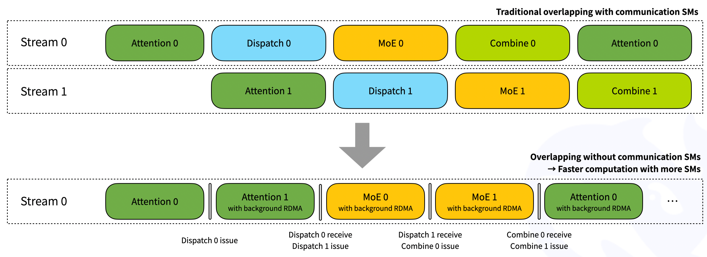
这张图把 V1 的两条执行路径放在同一时间轴上：上半部分是普通/高吞吐 dispatch-combine 路径，下半部分是 Low-Latency 路径。二者都在做 Attention → Dispatch → MoE → Combine，根本区别是谁负责推动跨节点通信前进：
- 上半部分由 GPU 通信 kernel 持续驻留并推进发送、接收，因此通信阶段会占用通信 SM。
- 下半部分只在
issue和receive边界运行短 GPU kernel；真正的网络传输由 NVSHMEM IBGDA/RDMA 在后台推进，使中间的 Attention 或 MoE 尽可能拿到更多 SM。 - 图中的 Stream 0/1 更适合看成两个交错的 micro-batch 逻辑泳道，不应机械理解为源码中永远固定的两个 CUDA stream。下半图画成单一 Stream 0，是为了突出“计算串行推进、RDMA 在后台并行”的关键关系。
颜色含义如下：
| 颜色 | 阶段 | 主要职责 |
|---|---|---|
| 绿色 | Attention | 当前或下一 micro-batch 的注意力计算 |
| 蓝色 | Dispatch | 按路由结果把 token 发送到目标 expert rank |
| 黄色 | MoE | expert grouped GEMM 及相关计算 |
| 黄绿色 | Combine | 把 expert 输出返回源 rank，并按 top-k 权重归并 |
下半图的完整时间线
| 图中顺序 | 前台动作 | 后台动作 | 对应含义 |
|---|---|---|---|
| 1 | Attention 0 |
无 | micro-batch 0 产生待路由 hidden states 和 top-k 路由结果 |
| 2 | Dispatch 0 issue |
开始 RDMA | 发布 micro-batch 0 的 token、scale、源信息和计数 |
| 3 | Attention 1 |
Dispatch 0 RDMA | micro-batch 1 的 Attention 与 micro-batch 0 的网络传输重叠 |
| 4 | Dispatch 0 receive，随后 Dispatch 1 issue |
Dispatch 1 RDMA 开始 | 收取 micro-batch 0 的 dispatch 结果，同时发布 micro-batch 1 |
| 5 | MoE 0 |
Dispatch 1 RDMA | expert 计算 0 与下一批 token 的传输重叠 |
| 6 | Dispatch 1 receive，随后 Combine 0 issue |
Combine 0 RDMA 开始 | micro-batch 1 可进入 MoE；micro-batch 0 的 expert 输出开始返回 |
| 7 | MoE 1 |
Combine 0 RDMA | expert 计算 1 与上一批输出回传重叠 |
| 8 | Combine 0 receive，随后 Combine 1 issue |
Combine 1 RDMA 开始 | 完成 micro-batch 0 的 top-k 加权归并，并发布 micro-batch 1 回传 |
| 9 | 下一轮 Attention 0 |
Combine 1 RDMA | 下一迭代的 Attention 隐藏上一批 combine 网络时间 |
| 10 | 后续 Combine 1 receive |
— | 在真正消费 micro-batch 1 归并结果前完成接收 |
图中细竖线不是“零成本”的意思，而是把短暂的边界操作压缩表示。issue 与 receive 都仍然需要 GPU 执行；图要表达的是二者之间较长的网络飞行时间不需要通信 kernel 长驻 SM。
issue 在代码里做什么
Low-Latency kernel 通过 phase 模板把发送和接收拆成两次 launch。dispatch 的发送阶段可概括为：
launcher(LEGACY_LOW_LATENCY_SEND_PHASE);该阶段完成的核心工作包括：
- 读取
topk_idx，确定每个 token 应发往哪些 expert/rank。 - 按 expert 的固定容量槽位分配位置，形成接收端可直接消费的 packed 布局。
- 在需要时执行 FP8/UE8M0 量化并生成 scale。
- 写入 NVSHMEM 对称通信缓冲区中的 token、scale、源 token 信息与元数据。
- 调用
nvshmemi_ibgda_put_nbi_warp等 IBGDA 操作发布非阻塞 RDMA。 - 更新计数或 flag，使接收端能够判断数据何时完整可见。
Combine 的发送阶段与之对称：它依据 dispatch 阶段保留下来的 src_info、layout_range 等信息，把各 expert 的输出发回 token 的源 rank，并发布完成标志。
因此，issue 的准确含义不是“已经完成通信”，而是“WQE 已写入并发布给 transport/NIC 可以获取，GPU 可以转去执行别的计算”；此时 NIC 未必已经 fetch WQE，更没有保证远端完成。
“with background RDMA”究竟意味着什么
在 issue kernel 返回之后，NIC 根据已发布的 work request 继续跨节点搬运数据。理想状态是：
网络飞行期间通信 SM 占用 ≈ 0
计算 SM 可用于 Attention / MoE这正是图中 “Overlapping without communication SMs” 的含义。但它有三个边界：
- 不是端到端零 SM。 issue、receive、量化、打包、解包、检查 flag 都会执行 GPU 指令。
- 不是完全零资源竞争。 RDMA 仍可能争用 HBM/L2、PCIe 或 NVLink 路径，具体取决于节点拓扑和数据路径。
- 不是 NIC 自动解决依赖。 程序必须在使用接收数据前显式调用 receive hook；若网络尚未完成，receive kernel 会等待对应计数/flag。
receive 在代码里做什么
Buffer::low_latency_dispatch 在 return_recv_hook=true 时不会立即完成接收，而是返回一个 hook。其核心形态是：
recv_hook = [=]() {
launcher(LEGACY_LOW_LATENCY_RECV_PHASE);
};调用 dispatch hook 后，接收阶段会：
- 等待目标 expert 的到达计数和完成 flag。
- 读取固定槽位中的 hidden states、scale 与源 token 元数据。
- 生成/整理
recv_x、recv_count、src_info、layout_range等后续 MoE 和 combine 所需对象。 - 建立正确的 CUDA stream 依赖，保证 grouped GEMM 不会看到未完成的数据。
Combine hook 则等待回传数据，读取各 top-k expert 的输出，乘以相应的 topk_weights，再对同一源 token 做归约，最终形成 combined_x。
为什么下半图可能更快
普通路径即使能通过双 micro-batch 把通信和计算叠加，通信 kernel 仍会占用一定数量的 SM。Low-Latency 路径的可见时间近似为：
T_visible ≈ T_issue + max(T_compute, T_RDMA) + T_receive收益来自两部分：
T_RDMA被 Attention 或 MoE 隐藏；- 网络传输期间不保留通信 SM，前台计算能使用更多 SM，Attention/MoE 本身也可能更快。
如果 T_RDMA > T_compute，receive hook 仍需等待剩余网络时间；如果消息很大或目标偏斜严重，固定槽位和低延迟协议也未必优于普通高吞吐路径。因此这张图表达的是理想流水线机制，不是对所有负载都成立的固定性能结论。
Python 调用与图中边界的对应
| 图中标注 | Python/C++ 接口行为 |
|---|---|
Dispatch N issue |
调用 low_latency_dispatch(..., return_recv_hook=True)，执行 SEND phase 并返回 hook |
Dispatch N receive |
在 MoE 真正依赖数据前调用 dispatch recv_hook() |
MoE N |
使用 recv_x 和 recv_count 执行 grouped GEMM |
Combine N issue |
调用 low_latency_combine(..., return_recv_hook=True)，发布输出回传 |
Combine N receive |
在下一层消费结果前调用 combine recv_hook()，完成加权归并 |
实现流水时需要遵守以下约束：
return_recv_hook=True与async_finish=True不能同时使用；两者代表不同的完成控制方式。- hook 必须放在最晚但正确的依赖点：过早调用会损失重叠，过晚调用则会读到尚未完成的输出。
- 当前 low-latency 缓冲区使用双 buffer/ping-pong 思路，不能无限增加在途 micro-batch。
- 与某个 micro-batch 关联的输入 tensor、输出 tensor、handle 和元数据必须存活到对应 receive 完成。
- 生产代码应通过 CUDA event/stream wait 建立依赖，不应把图中的逻辑泳道误写成全局同步。
与上半图的一句话对照
- V1 普通路径： GPU-resident progress——通信 kernel 在 SM 上持续推进传输，以吞吐和较大消息效率为目标。
- V1 Low-Latency： NIC-resident progress——GPU 只负责发布与收取，网络飞行阶段主要由 IBGDA/RDMA 推进，以低延迟和释放计算 SM 为目标。
V2 的协议和弹性/PP 能力另有设计，不应把这张 V1 图直接当成 V2 的执行时序；尤其 V2 并未原样保留 V1 这种 0-SM receive-hook EP 接口。
2. 代码地图
| 层次 | 文件 | 关键内容 |
|---|---|---|
| Python API | deep_ep/buffers/legacy.py |
size hint、dispatch/combine、hook、zero-copy、mask 与诊断接口 |
| C++ 编排 | csrc/legacy/buffer.hpp |
ping-pong buffer 选择、固定输出分配、phase 拆分、event/hook |
| 内存布局 | csrc/legacy/config.hpp |
LowLatencyBuffer、LowLatencyLayout、消息大小和两套缓冲 |
| CUDA 内核 | csrc/kernels/legacy/internode_ll.cu |
清理、dispatch、combine、mask barrier、超时诊断 |
| 内核 API | csrc/kernels/legacy/api.cuh |
low-latency launch 参数和 phase 接口 |
| IBGDA | csrc/kernels/legacy/ibgda_device.cuh |
GPU 发起 put/atomic、QP 访问 |
| 测试 | tests/legacy/test_low_latency.py |
FP8/BF16、hook、zero-copy、LogFMT、shrink、性能测试 |
调用链：
查看 Mermaid 图源码
flowchart TD
A[Python Buffer.low_latency_dispatch] --> B[C++ Buffer::low_latency_dispatch]
B --> C[选择 ping/pong buffer]
C --> D[分配固定 expert-major 输出]
D --> E[internode_ll::dispatch]
E --> F{是否 return_recv_hook}
F -- 否 --> G[SEND + RECV phases]
F -- 是 --> H[只执行 SEND phase]
H --> I[返回 recv_hook]
I --> J[用户在合适时机调用 hook]
J --> K[只执行 RECV phase]
G --> L[expert GEMM]
K --> L
L --> M[low_latency_combine]
M --> N[同样可拆 SEND/RECV]
N --> O[combined_x]3. 初始化要求
3.1 创建 low-latency buffer
num_rdma_bytes = deep_ep.Buffer.get_low_latency_rdma_size_hint(
num_max_dispatch_tokens_per_rank,
hidden,
group.size(),
num_experts,
)
buffer = deep_ep.Buffer(
group,
num_nvl_bytes=0,
num_rdma_bytes=num_rdma_bytes,
low_latency_mode=True,
num_qps_per_rank=num_experts // group.size(),
)关键约束：
num_experts % num_ranks == 0；- 最佳性能下
num_qps_per_rank == num_local_experts，即每个 local expert 对应一个 QP； - 所有 rank 必须能通过 NVSHMEM/IBGDA 路径访问；
- NVSHMEM QP depth 至少为
(num_max_dispatch_tokens_per_rank + 1) * 2； num_max_dispatch_tokens_per_rank是固定容量，也是输出形状和显存开销的核心参数，解码场景通常应控制在 256 以下。
Buffer.__init__ 在 low-latency 模式中以全局 rank 作为 NVSHMEM PE，而 normal 跨节点模式只以 rdma_rank 作为 PE。这使 low-latency 能直接面向整个 EP group 发起通信。
3.2 从对称堆到 NIC 注册内存
官方资料背景： NVSHMEM 采用 SPMD PE 模型。所有 PE 必须以相同顺序、相同大小参加对称分配；返回地址在本 PE 上是普通 CUDA 指针，而远端寻址逻辑是“本地对称地址在 heap 中的 offset + 目标 PE 的 heap base”。所以“对称”指跨 PE 可由同一 offset 定位，并不要求不同进程的数值虚拟地址完全相同。
源码可证： low-latency 的初始化链路是：
查看 Mermaid 图源码
flowchart TD
A[各 rank 计算同一个 RDMA size hint] --> B[设置 NVSHMEM/IBGDA 环境]
B --> C[nvshmem_align 分配 symmetric heap 区域]
C --> D[NVSHMEM 建立 PE、QP 与远端 heap/key 表]
D --> E[DeepEP 将 rdma_buffer 全部置零]
E --> F[全 PE barrier]
F --> G[LowLatencyLayout 在该区域切分 ping/pong]Python 初始化在 NVSHMEM bootstrap 之前设置的关键项包括：
| 配置 | 当前 V1 代码中的作用 |
|---|---|
NVSHMEM_IB_ENABLE_IBGDA=1 |
选择 GPU 发起的 IBGDA transport |
NVSHMEM_IBGDA_NUM_RC_PER_PE=num_qps_per_rank |
为每个对端 PE 建立多条 RC QP；推荐值等于 local expert 数 |
NVSHMEM_QP_DEPTH |
设置 legacy 路径期望的 QP 深度；Python 侧检查至少 (M+1)*2 |
NVSHMEM_DISABLE_P2P |
控制是否允许节点内 P2P bypass |
NVSHMEM_DISABLE_NVLS=1 |
禁用当前 legacy 初始化不使用的 NVLS 路径；源码未设置 NVSHMEM_IBGDA_NIC_HANDLER |
NVSHMEM_CUMEM_GRANULARITY=2^29 |
控制对称堆的 cuMem 分配粒度 |
这里有三个容易混淆的概念：
- CUDA 可访问不等于NIC 可 RDMA。NVSHMEM transport 还要把 heap backing memory 注册给 HCA，并向设备侧状态提供 local/remote key。
- 常规
torch.empty输出并未因此自动成为 DeepEP 的 RDMA 源/目的；真正的网络 send/recv 区是rdma_buffer中的对称分配。zero-copy combine 之所以成立，正因为它返回的是这块已注册区域上的视图。 - 节点内存在可用 P2P 指针时，内核可直接做 GPU copy；否则才走 IBGDA。两条路径的性能资源冲突不同，必须按真实拓扑分别测量。
3.3 GPU 如何构造 WQE：QP、lkey 与 rkey
官方资料背景： IBGDA 把传统 CPU verbs 路径中的“构造 work request、更新队列、敲 doorbell”下沉到 GPU。GPU 线程把 WQE 写进位于 GPU 内存的 QP work queue，更新 doorbell record/doorbell 后，HCA 直接 DMA 读取源 GPU 内存并在远端执行写入或原子操作。
源码可证： legacy/ibgda_device.cuh 是从 NVSHMEM device transport 派生并修改的实现。一次 nvshmemi_ibgda_put_nbi_warp 可展开为：
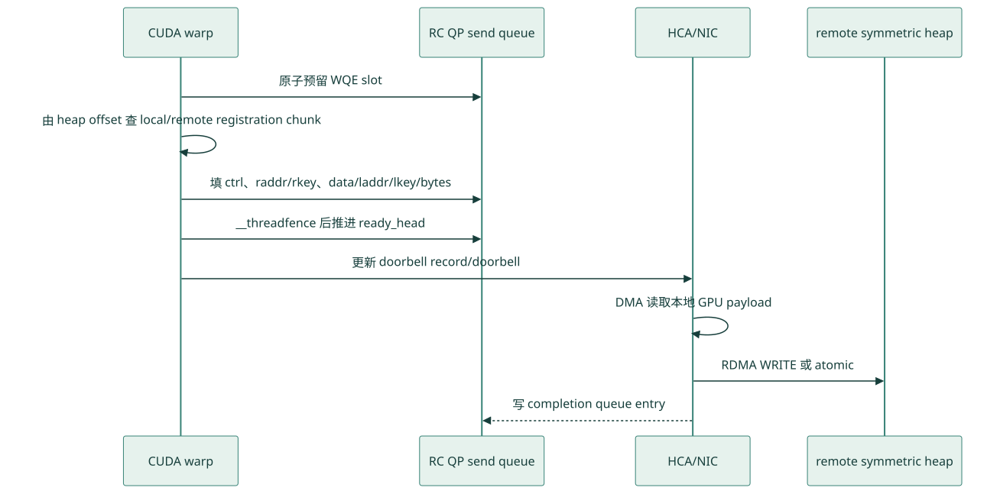
查看 Mermaid 图源码
sequenceDiagram
participant W as CUDA warp
participant SQ as RC QP send queue
participant NIC as HCA/NIC
participant R as remote symmetric heap
W->>SQ: 原子预留 WQE slot
W->>W: 由 heap offset 查 local/remote registration chunk
W->>SQ: 填 ctrl、raddr/rkey、data/laddr/lkey/bytes
W->>SQ: __threadfence 后推进 ready_head
W->>NIC: 更新 doorbell record/doorbell
NIC->>NIC: DMA 读取本地 GPU payload
NIC->>R: RDMA WRITE 或 atomic
NIC-->>SQ: 写 completion queue entryWQE 中两个 key 的职责不同：
lkey授权 HCA 读取本地 source address；rkey授权远端 HCA 写入/原子访问目标地址；raddr不是直接照抄本地指针，而是由对称 heap offset 加目标 PE 的 remote base 得到。
NVSHMEM 的 heap 可能按 registration chunk 注册。当前 put helper 同时检查本地与远端 chunk 边界，把跨界的一个逻辑消息拆成若干 WQE，每段各自携带正确的 lkey/rkey；源码注释指出理论上通常不超过三段，但实现仍以边界计算结果为准。由此可见，固定 72 字节或任意单一 metadata 大小都不能被当作通用的 WQE/注册粒度保证。
RC QP 由 ibgda_get_rc(pe, id) 选择，id 会映射到该对端可用的 RC QP 集合。DeepEP dispatch 把目标 dst_local_expert_idx 作为 QP id，combine 把发送方 local_expert_idx 作为 QP id；这解释了“每个 local expert 一条 QP”的源码意图。QP 太少会增加热点和串行化，QP 太多则增加设备状态、队列内存和 NIC 资源压力，最佳值是需要在目标 HCA、EP 规模和路由偏斜上验证的调优假设。
WQE 发布还有两个层次：
__threadfence()让当前 GPU 写出的 WQE 描述符在推进 ready head/doorbell 前可见；它不是“远端 payload 已完成”的证明。put_nbi返回只说明请求已构造/发布到传输路径，不说明远端数据已经到达。CQ producer index/quiet才参与本地执行上下文的完成确认，但 DeepEP 热路径主要用后续 count/flag 协议避免每条消息做quiet。
3.4 payload、count/flag 与完成顺序
先给出 NVSHMEM 的公共语义边界：
| 操作 | 官方语义的安全表述 |
|---|---|
| 非阻塞 RMA（NBI） | 调用返回时操作可以仍在途；使用前必须通过适当的同步/完成操作建立依赖 |
nvshmem_fence |
排序本 PE 之前与之后发往目标 PE 的更新，但它本身不是所有操作均已完成的等待 |
nvshmem_quiet |
等待调用 PE 当前执行上下文中此前发起的相关 NBI 更新完成 |
put-with-signal |
对同一 API 操作，接收端观察到 signal 完成可作为其关联数据已交付的通知 |
| 独立 signal/另一条 QP | 不能不加证明地推断它替任意先前 transfer 提供排序；跨 QP 操作本来就是独立的 |
DeepEP 热路径没有简单调用公共 nvshmem_put_signal，而是直接构造 put WQE 与后续 atomic WQE。因此下面的结论属于“源码可证的局部事实 + 协议推导”，不是可移植到任意 NVSHMEM 程序的保证。
Dispatch 的发送完成协议为：
查看 Mermaid 图源码
flowchart LR
A[各数据 warp: payload put<br/>QP id = dst_local_expert] --> B[本地 finish counter<br/>release/acquire 汇合]
B --> C[计数 warp: count AMO<br/>同一 dst_local_expert QP]
C --> D[远端 system-acquire 轮询 count]
D --> E[解码 count 并复制 payload]- 本地
atomic_finish_counter只协调同一 kernel 中的 warp，证明负责该 expert 的 payload put 已被构造/提交；它不等于网络完成。 - 随后的 count AMO 使用与 payload 相同的
dst_local_expert_idxQP。内部 QP 的 ready-head 串行发布机制和 RC QP 顺序是接收端把 count 当作到达标志的协议基础。 - count 编码为
-num_tokens_sent-1：即使发送 0 个 token，也会写-1；初值0因而唯一表示“尚未收到完成计数”。接收端取反解码后才得到真实数量。
Combine 同理：某个 local expert 的 payload put 全部使用 local_expert_idx QP，warp 汇合后再在同一 QP 上用 atomic 写对应 flag；源 rank 以 system-scope acquire load 等待按 global expert 编号的 flag，随后再读取消息并规约。
这套设计要求长期保持以下不变量：
- 同一逻辑 payload 与其 count/flag 必须留在协议证明覆盖的同一 QP 序列上；
- 下一轮复用 signal 与 data slot 之前，上一轮消费与清理必须完成；
- 若未来把 payload 条带化到不同 QP、改成另一类 transport，必须重新引入有官方语义支撑的 fence/quiet/put-with-signal 或等价完成协议，不能只保留一个 atomic flag；
- 接收端的 acquire load 负责观察通知并约束后续 GPU 读取，但“flag 代表哪些 payload”仍由前述发送顺序定义。
4. 固定消息与双缓冲布局
4.1 为什么采用固定容量
解码 batch 小，但调用频繁。如果先交换大小、CPU 读取计数、再分配动态输出，固定开销会主导总时延。low-latency 直接按上界：
每个 local expert 最多接收 num_ranks * num_max_dispatch_tokens_per_rank 个槽位真实有效数量由 GPU 张量 packed_recv_count[local_expert] 给出。
4.2 LowLatencyLayout 的真实物理顺序
设：
R = num_ranks
E = num_experts
L = E / R # 每 rank local experts
M = num_max_dispatch_tokens_per_rank
H = hidden
A128(x) = x 按 128 B 对齐LowLatencyLayout 在同一块 NVSHMEM symmetric buffer 中构造两个逻辑 slot，但物理顺序不是“一个完整 ping 后接一个完整 pong”，而是同类区域成对排列：
| signal/count 0 | signal/count 1 |
| send data 0 | send data 1 |
| recv data 0 | recv data 1 |每个 LowLatencyBuffer 只是把对应 slot 的三段指针组装起来；同一 data 区又被 dispatch 与 combine 以不同消息类型别名解释。因此，dispatch 与 combine 的容量取二者最大值，而不是各自再分配一整套物理内存。
查看 Mermaid 图源码
flowchart TD
X[symmetric rdma_buffer] --> S[2 x aligned signal regions]
S --> TX[2 x max dispatch/combine send regions]
TX --> RX[2 x max dispatch/combine recv regions]
RX --> B0[LowLatencyBuffer 0: signal0/send0/recv0]
RX --> B1[LowLatencyBuffer 1: signal1/send1/recv1]4.3 精确消息与容量公式
Dispatch 单条槽位的保守大小为：
Dmsg = sizeof(int4) + max(
H * sizeof(bfloat16), # BF16 payload
H * sizeof(fp8) + (H/128)*4 # FP8 payload + FP32 scale 上界
)
= 16 + max(2H, H + H/128*4)其中 int4 保存 source token index 等控制字段；FP8 scale 的逻辑粒度是每 128 hidden 元素一组。use_ue8m0 可压缩实际 scale 表示，但布局 size hint 仍按上述安全上界计算。
Combine 单条槽位容量为：
Cmsg = H * sizeof(bfloat16)
+ (H/128) * sizeof(nv_bfloat162)
= 2H + (H/128)*4每个 128 元素分组都预留一个 nv_bfloat162，保存 LogFMT 判断/解码所需的两个 BF16 元数据。物理 payload 区仍按 BF16 上界分配，启用 LogFMT 时才让部分分组在其中使用 10-bit packed 表示。
该 commit 中每个 slot 的概念容量为：
send_bytes = max(M * Dmsg, E * M * Cmsg)
recv_bytes = max(E * M * Dmsg, E * M * Cmsg)
signal_bytes = A128(E * sizeof(int))总 size hint 再容纳两份 signal、send、recv。源码最终使用 ((num_bytes + 128) / 128) * 128，它是保守留量而不是标准 align_up(num_bytes, 128)：当 num_bytes 已整除 128 时仍会多留 128 B。
显存随 E*M*H 近似线性增长；因此把 M 盲目设成远大于真实 decode batch 的值，会同时扩大 registered heap、QP 在途上界和 cache/HBM 足迹。
4.4 ping-pong 是“按 API 调用翻转”，不是任意两轮缓存
每次 low_latency_dispatch 或 low_latency_combine 进入 C++ 都执行：
auto buffer = layout.buffers[low_latency_buffer_idx];
auto next_buffer = layout.buffers[low_latency_buffer_idx ^= 1];
auto next_clean_meta = next_buffer.clean_meta();当前调用使用 buffer，同时在其 SEND phase 清理 next_buffer 的 signal/count，为下一次 low-latency API 调用做准备。翻转单位是一次 dispatch/combine API 调用，不是“一个完整 micro-batch”。典型双 micro-batch 的安全序列如下：
| 顺序 | 动作 | 当前 data slot | SEND 顺带清理 | 必须已满足 |
|---|---|---|---|---|
| 1 | Dispatch A SEND | 0 | signal 1 | 初始两组 signal 为 0 |
| 2 | Dispatch A RECV hook | 0 | — | 消费 slot 0 的 count/payload |
| 3 | Dispatch B SEND | 1 | signal 0 | A 的 RECV 已不再依赖 signal 0 |
| 4 | Dispatch B RECV hook | 1 | — | 消费 slot 1 |
| 5 | Combine A SEND | 0 | signal 1 | A dispatch 数据已搬到独立输出，B 的 RECV 已完成 |
| 6 | Combine A RECV hook | 0 | — | 规约 A 返回值 |
| 7 | Combine B SEND | 1 | signal 0 | A combine RECV 已完成 |
| 8 | Combine B RECV hook | 1 | — | 规约 B 返回值 |
实际经典图会把步骤 2/3、4/5、6/7 各压缩在同一个边界附近，并在边界之间插入 Attention/MoE。表格强调的是依赖顺序，不要求 CPU 阻塞；同一 CUDA stream 的 enqueue 顺序或显式 event 可以建立这些依赖。
需要据此修正一句常见但过宽的说法：双缓冲并不等价于“任意两个未完成结果都能安全长期持有”。 正确规则是：下一次调用清理另一 slot 的 signal，某 slot 再次成为当前 slot 前，其旧 RECV 必须完成；hook 捕获的输入、输出、handle 和 layout 也必须存活。普通 recv_x/combined_x 是另行分配的输出张量，不能一概说成 RDMA buffer 视图；真正明确别名 registered send buffer 的是 zero-copy combine view。
若使用 CUDA Graph，固定形状有利于 capture，但 buffer 指针和 host 侧 ping-pong index 在 capture 时已选定。生产代码应把 capture/replay 当作一个完整协议单元验证，避免与 eager 调用交叉后仅凭“有两个 slot”推断状态仍正确。
5. Low-Latency Dispatch 原理
5.1 输入输出
输入：
x : BF16 [T, H]
topk_idx : topk_idx_t [T, K]
T <= num_max_dispatch_tokens_per_rank输出：
packed_recv_x:
BF16 或 FP8
[num_local_experts, num_ranks * max_tokens, H]
packed_recv_x_scales（FP8 时）:
逻辑上 [num_local_experts, num_ranks * max_tokens, H/128]
底层采用适合 TMA/GEMM 的列主序 stride
packed_recv_count:
int32 [num_local_experts]同时返回：
handle = (
packed_recv_src_info,
packed_recv_layout_range,
num_max_dispatch_tokens_per_rank,
hidden,
num_experts
)5.2 固定 expert-major 布局
查看 Mermaid 图源码
flowchart LR
subgraph E0[Local expert 0]
E00[src rank 0 slots] --- E01[src rank 1 slots] --- E0N[src rank N slots]
end
subgraph E1[Local expert 1]
E10[src rank 0 slots] --- E11[src rank 1 slots] --- E1N[src rank N slots]
end对每个 local expert，每个源 rank 都预留 max_tokens 的容量。接收后内核把有效 token 压紧到该 expert 的前部，并生成：
src_info[expert, packed_slot]：原源 token index；layout_range[expert, src_rank]：该源 rank 在 packed expert 区间中的起点和数量；recv_count[expert]：expert 总有效 token 数。
这种布局可直接作为 grouped GEMM 的输入，不需要 CPU 根据动态 token 数重新建张量。
5.3 CUDA kernel 的 warp-group 映射
internode_ll::dispatch 以逻辑 CUDA block 和 warp group 分配 expert；源码变量 sm_id 实际等于 blockIdx.x，不是硬件物理 SM ID：
num_warp_groups = ceil(num_experts / num_device_sms)
responsible_expert_idx = sm_id * num_warp_groups + warp_group_id一个 warp group 包含多个 warp：
- 数据 warp：读取 BF16 hidden，按需做 FP8 量化，并为 top-k 目标 expert 发起 IBGDA put；
- 计数 warp：扫描
topk_idx，统计每个 expert 的实际发送数； - 接收侧一个 sub-warp 等待远端 count，其他 sub-warps 与等待过程重叠地搬运已到达 token。
5.4 SEND phase
查看 Mermaid 图源码
flowchart TD
A[遍历本 rank token] --> B[读取 topk_idx]
B --> C{use_fp8?}
C -- 是 --> D[每 128 channel 求 amax 和 scale]
D --> E[BF16 -> FP8/UE8M0 scale]
C -- 否 --> F[保留 BF16]
E --> G[为目标 expert atomic 分配 slot]
F --> G
G --> H{目标有本地 P2P ptr?}
H -- 是 --> I[warp copy 到目标 buffer]
H -- 否 --> J[nvshmemi_ibgda_put_nbi_warp]
I --> K[完成计数]
J --> K
K --> L[等待该 expert 所有 payload 已发起]
L --> M[发送 expert token count]几个关键点：
- FP8 量化与网络发送融合，避免单独 cast kernel 和额外 HBM 往返。
- 每个目标 expert 使用原子计数分配唯一 slot。
- payload 发起完成后才发送 count，count 是接收侧可见性协议的一部分。
- 本地 rank 若有可直接访问的 P2P 指针，可用 GPU copy bypass NIC；否则发起 IBGDA put。
mask_buffer启用时，被 mask 的 rank 不再收发。
5.5 RECV phase
查看 Mermaid 图源码
flowchart TD
A[每个 local expert x 每个 src rank] --> B[等待 recv_count 信号]
B --> C[记录 begin/count 到 layout_range]
C --> D[atomicAdd expert packed_recv_count 分配连续区间]
D --> E[复制 src token index]
E --> F[复制 hidden 与 scale 到 packed expert-major 输出]
F --> G[更新诊断统计]接收阶段不需要 CPU 参与。一个 sub-warp 专门轮询 count，其他 sub-warp 随后复制 payload；超时会记录具体 src rank、expert 和等待周期，并在未启用 shrink 时触发 trap。
5.6 FP8 scale 布局
默认 FP8 使用每 128 channel 一组 FP32 scale。为了后续 TMA/GEMM，C++ 先分配：
[local_expert, H/128, num_ranks * max_tokens]再做 transpose 视图，暴露逻辑形状：
[local_expert, num_ranks * max_tokens, H/128]因此它看起来 token-major，实际 stride 是列主序。use_ue8m0=True 时每 4 个 scale 打包成一个 int，并要求 round_scale=True。
6. Low-Latency Combine 原理
6.1 输入输出
输入 expert 结果：
x: BF16 [num_local_experts, num_ranks * max_tokens, H]还需要原始：
topk_idx [num_original_tokens, K]
topk_weights [num_original_tokens, K]
dispatch handle 中的 src_info 与 layout_range输出：
combined_x: BF16 [num_original_tokens, H]combine 会对来自不同 expert 的结果乘对应 topk_weights 后相加，这是 low-latency 与 normal combine 语义上最重要的差异之一。
6.2 SEND phase
combine 根据 layout_range[local_expert, src_rank] 找到 dispatch 时由某个源 rank 发来的 token 区间：
- 读取本地 expert GEMM 输出；
- 根据
src_info恢复源 token index； - 将返回消息写入源 rank 对称 recv buffer；
- 可用 BF16 直接发送，也可按 每 128 个 hidden 元素动态选择内部 10-bit
LogFMT或 BF16 fallback； - 数据可见后写 flag，通知源 rank 某段结果到达。
6.3 RECV phase 与加权规约
源 rank 按本地 token 和 top-k expert 等待返回 flag，读取对应消息并：
combined_x[token] = sum_k(expert_output[token, k] * topk_weights[token, k])无效 topk_idx == -1 跳过。内核对 hidden 维做 warp 向量化规约，最后写 BF16 输出；可直接写用户传入的 out，避免额外分配。
查看 Mermaid 图源码
flowchart LR
A[expert-major GEMM output] --> B[按 layout_range 找源 rank/token]
B --> C[发送结果 + flag]
C --> D[源 rank 等待各 top-k 返回]
D --> E[乘 topk_weights]
E --> F[warp reduce/add]
F --> G[combined_x]6.4 LogFMT：固定容量中的动态混合编码
源码可证： 当前 kernel 以 H/128 个 division 处理 combine 消息，而不是某些 Python docstring 中写的 per-64。每个 128 元素 division 始终有一个 nv_bfloat162（4 B）元数据槽，并根据该组数值的对数范围选择：
查看 Mermaid 图源码
flowchart TD
A[读取 128 个 BF16] --> B[统计 log_amax/log_amin]
B --> C{满足 LogFMT 编码条件?}
C -- 是 --> D[每值: sign + 9-bit magnitude]
D --> E[128 x 10 bit = 160 B]
C -- 否 --> F[保留 128 x BF16 = 256 B]
E --> G[写 4 B division metadata]
F --> G源码分支要求 log_amax < 0 且 log_amin < log_amax，并把可表示的最小对数范围限制在 32 以内；不满足时该 division 保留 BF16。接收端从 metadata 判断同一 division 应走 10-bit 解码还是 BF16 load。也就是说：
- LogFMT 是 DeepEP 内部 wire format，不是一个可由普通 GEMM 直接产生的标准 dtype；
- 压缩选择是逐 128 元素组动态发生，一条消息可混合压缩组与 BF16 fallback 组；
- 理想编码组把 payload 从 256 B 降到 160 B，另加固定 4 B metadata，即仅按元素位宽计算是 BF16 的
10/16； - 固定 buffer 仍按最坏 BF16 容量分配，所以它节省网络实际发送字节，不直接缩小
LowLatencyLayout的显存上界。
测试中的 LogFMT 带宽记账使用近似 H*10/8 + (H/128)*4，适用于全部组走压缩分支的构造数据；对真实模型应同时统计 BF16 fallback 比例，否则“有效 GB/s”会高估实际压缩收益。
zero_copy=True 与 use_logfmt=True 在 C++ 中被显式拒绝。原因不是 API 偏好，而是 zero-copy 要求 NIC 直接读取 GEMM 已写好的 BF16 registered buffer；LogFMT 则必须在 combine SEND kernel 中做分析、编码和重排，两条数据生产方式冲突。
7. Send/Recv Phase、完成链与 Hook 生命周期
7.1 两个 phase 到底各做什么
底层 phases 是 bitmask：
LEGACY_LOW_LATENCY_SEND_PHASE = 1
LEGACY_LOW_LATENCY_RECV_PHASE = 2| API | SEND phase | RECV phase |
|---|---|---|
| dispatch | 路由、量化/打包、payload put、本地 warp 汇合、count AMO、清下一 slot signal | 等 count，解码数量，把固定远端槽压紧到 expert-major 输出，写 recv_count/src_info/layout_range |
| combine | 按 layout_range 取 expert 输出，BF16 或 LogFMT 编码，payload put、flag AMO、清下一 slot signal |
等各 global expert flag，grid sync，加载/解码，乘 topk_weights，FP32 累加并写 BF16 |
非 hook 模式把两个 bit 一起传给同一次 kernel launch，因此调用内部会等待通信完成。hook 模式第一次只传 SEND，返回的 callable 再以相同捕获参数只传 RECV。
7.2 五个不能混为一谈的“完成”
一次 hook 调度中的事件顺序是：
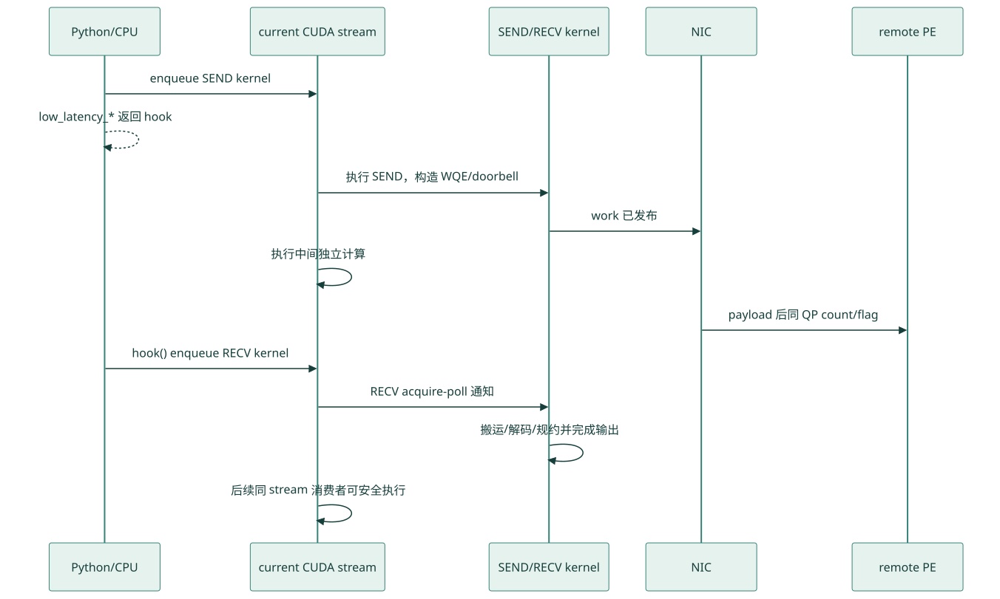
查看 Mermaid 图源码
sequenceDiagram
participant CPU as Python/CPU
participant S as current CUDA stream
participant K as SEND/RECV kernel
participant N as NIC
participant P as remote PE
CPU->>S: enqueue SEND kernel
CPU-->>CPU: low_latency_* 返回 hook
S->>K: 执行 SEND，构造 WQE/doorbell
K->>N: work 已发布
S->>S: 执行中间独立计算
N->>P: payload 后同 QP count/flag
CPU->>S: hook() enqueue RECV kernel
S->>K: RECV acquire-poll 通知
K->>K: 搬运/解码/规约并完成输出
S->>S: 后续同 stream 消费者可安全执行必须区分：
- Python API 返回： 只表示 launch 已入队且 callable 已创建，不代表 SEND kernel 已跑完。
- SEND kernel 完成： WQE 已构造/发布，本地打包工作结束；远端 payload 可以仍在途。
- NIC 完成传输： 由同 QP count/flag 协议向远端接收 kernel 暴露，CUDA stream 本身不会自动感知非本地网络依赖。
- 调用
hook()返回到 Python： 通常只表示 RECV kernel 又被 enqueue；它不是隐式cudaDeviceSynchronize()。 - RECV kernel 在 CUDA stream 上完成： 输出才对该 stream 后续 kernel 可消费。CPU 读取需另做同步，其他 CUDA stream 需显式 event/wait。
这也是经典图中细竖线仍有成本的原因：SEND/RECV kernel 会短时使用 SM；所谓“0-SM overlap”只指两者之间的 NIC 飞行窗口没有常驻通信 kernel。
7.3 current stream、comm stream 与事件
源码可证： 当前实现实际读取 at::cuda::getCurrentCUDAStream()。源码旁的 “default stream” 注释容易造成歧义；准确行为是调用当时的 current compute stream，它不保证一定是 CUDA legacy default stream。
return_recv_hook=True：SEND 和稍后的 RECV 都 launch 到该 current stream；中间计算也按调用方 enqueue 顺序排在二者之间。return_recv_hook=False, async_finish=False：专用comm_stream先等待 compute stream，执行 SEND+RECV，随后 compute stream 等待通信流。return_recv_hook=False, async_finish=True：不让 compute stream 反向等待，而是返回EventOverlap；Python wrapper 保存相关 tensor 引用以避免异步完成前析构。return_recv_hook=True与async_finish=True被 C++ 显式禁止；hook 路径也不额外返回一个“RECV 已完成”事件。若输出要跨 stream 使用，调用方应在hook()之后于当前 stream 记录 event，再让消费者 stream wait。
Hook 应视为一次性 continuation。实现返回的是普通 callable，并不替调用方做“只调用一次”的状态检查；重复调用会重复 launch RECV，漏调则会让下一个 buffer 复用周期破坏协议。
7.4 经典双 micro-batch 的完整时间线
下表把图中的边界、API、slot 和可重叠计算放到同一张表中。假设初始 low_latency_buffer_idx=0：
| 时刻 | 前台 current stream | NIC/远端后台 | slot/依赖 |
|---|---|---|---|
| t0 | Attention A |
— | 产生 A 的 x/topk_idx |
| t1 | dispatch(A, hook=True) 的 SEND |
Dispatch A 在途 | 使用 slot 0；返回 hook_DA |
| t2 | Attention B |
Dispatch A 在途 | A 的输入与 hook 捕获对象仍存活 |
| t3 | hook_DA() RECV |
等待不足部分后收 A | slot 0 的输出/handle 完成 |
| t4 | dispatch(B, hook=True) SEND |
Dispatch B 在途 | 使用 slot 1；清 slot 0 signal |
| t5 | MoE A |
Dispatch B 在途 | 只处理 recv_count_A[e] 有效行 |
| t6 | hook_DB() RECV |
收 B | slot 1 dispatch 已消费 |
| t7 | combine(A, hook=True) SEND |
Combine A 在途 | 使用 slot 0；清 slot 1 signal |
| t8 | MoE B |
Combine A 在途 | B 的 expert 输出计算 |
| t9 | hook_CA() RECV |
收 A 返回并加权规约 | A 的 combined_x 完成 |
| t10 | combine(B, hook=True) SEND |
Combine B 在途 | 使用 slot 1；清 slot 0 signal |
| t11 | 下一轮 Attention A' |
Combine B 在途 | 只安排不依赖 B combined 输出的计算 |
| t12 | hook_CB() RECV |
收 B 返回并加权规约 | B 可进入下一依赖层 |
在同一 current stream 上，t3/t4、t6/t7、t9/t10 可以在 CPU 代码中相邻 enqueue；前一 RECV 的 kernel 完成先于后一 SEND 对旧 signal 的清理。若拆到不同 stream，必须用 event 显式恢复这个 happens-before。
理论上的可见时间为：
T_visible = T_send_issue + max(T_independent_compute, T_network_remaining)
+ T_recv_unpack_or_reduce这只是推导模型。如果 NIC/HBM 流量拖慢了 Attention/MoE，实际中间计算时间应写成 T_compute_under_overlap；若它显著大于独立测得的 T_compute_alone，即使通信被隐藏，端到端收益也会收窄。
7.5 Hook 捕获对象与可复用边界
Dispatch hook 捕获/依赖：原始 x/topk_idx、固定 RDMA slot、预分配的 packed_recv_x/scales/count/src_info/layout_range、mask/统计指针和 layout 参数。Combine hook 捕获/依赖：expert 输出 x、原始 topk_idx/topk_weights、dispatch handle、RDMA slot、combined_x 与可选统计/out。
安全检查清单：
- 在对应 RECV 完成前，不释放、resize 或原地改写上述 tensor；
layout_range是 dispatch RECV 才填好的，不能在hook_D之前启动依赖它的 combine；- 下一个使用同一 slot 的 API 前，旧 hook 必须完成；
- zero-copy view 的生产 GEMM 必须先于 combine SEND，NIC 尚在读该 slot 时不能覆盖；
- 所有 rank 维持兼容的 phase 次序，避免某 rank 等待一个从未由对端发出的 count/flag；
- 本地 P2P bypass 可能使用 GPU load/store，与前台计算争用资源；若目标是最纯粹的 NIC-only 重叠，应分别测试禁用与启用 P2P。
8. Zero-Copy Combine
get_next_low_latency_combine_buffer 返回下一次 API 调用将使用的当前 ping-pong slot 中、已经注册的 combine send 区视图：
shape = [L, R*M, H]
strides = [R*M*(Cmsg/2), Cmsg/2, 1] # 以 BF16 元素计由于每条消息还夹有 H/128 * sizeof(nv_bfloat162) 的 metadata 空间，第二维 stride 大于 H；这不是普通 contiguous [L,R*M,H] 张量。上游 GEMM/拷贝必须尊重该 stride，不能把它当成紧密数组做裸 memcpy。
当前测试所验证的调用形态是：
rdma_out = buffer.get_next_low_latency_combine_buffer(handle)
rdma_out[:, :, :] = simulated_gemm_x # 实际集成应让 GEMM 直接写 rdma_out
combined_x, event, hook = buffer.low_latency_combine(
simulated_gemm_x, # 当前 ABI 仍要求一个同形 contiguous x 做检查
topk_idx,
topk_weights,
handle,
zero_copy=True,
use_logfmt=False,
return_recv_hook=True,
)这也修正了一个容易写错的示例：不能直接把 rdma_out 作为 x 参数传入，因为 C++ 入口当前仍断言 x.is_contiguous()；zero-copy 分支真正发送的是 registered buf_ptr，常规 x 不再作为远端 RDMA payload。未来 API 若改变，应重新以测试为准。
收益与代价：
- 让 grouped GEMM 直接产生网络布局，省去
x → registered send buffer的一次 HBM copy； - 本地目标存在 P2P pointer 时，kernel 仍可能从
buf_ptrcopy 到目标，因此“zero-copy”不等于全拓扑绝对零复制； - view 必须在对应 combine SEND 发布且 NIC 不再读取前保持有效，不能跨越下一次同 slot 复用；
use_logfmt=True && zero_copy=True被内核硬性拒绝；- 调优时应把 GEMM 写带 stride 的效率与节省的 copy 时间一起测，不能只看通信 kernel。
9. Shrink / Rank Mask
构造 Buffer(enable_shrink=True) 后，low-latency 提供：
buffer.low_latency_update_mask_buffer(rank_to_mask, True)
buffer.low_latency_query_mask_buffer(mask_status)
buffer.low_latency_clean_mask_buffer()mask 的作用：
- dispatch/combine 跳过被 mask rank 的收发；
- 自定义 barrier 只等待未 mask rank；
- 某个 rank 超时后可自动写 mask，防止后续一直等待。
底层 mask_buffer 和 sync_buffer 位于 NVSHMEM 对称内存。有 shrink 时，自定义 barrier 先 quiet 全部 QP，再以 nvshmemi_ibgda_rma_p 把本地轮次计数写到远端并 acquire 等待；这是一条 inline RDMA write，不是远端 atomic。未启用 shrink 时使用 nvshmemx_barrier_all_block()。
注意：rank shrink 会改变业务语义——被 mask rank 上的 expert 结果缺失。它是容错/降级机制，不是透明的一致性恢复。
10. Buffer 清理
signal/count buffer 必须以零为初始状态。以下情况需调用：
buffer.clean_low_latency_buffer(max_tokens, hidden, num_experts)- low-latency buffer 可能被其他路径写脏；
- CUDA Graph replay 或异常中断后信号状态不确定；
- 调试时切换了通信模式或布局参数。
清理内核在写零前、后都做全局 barrier，避免还有未完成的上一轮 chunked EP 访问同一 buffer。
11. 诊断张量
11.1 Expert 负载统计
cumulative_local_expert_recv_stats[int32, num_local_experts] 在 dispatch 接收时累加实际 token 数，用于在线观察 gate 负载均衡。
11.2 等待时间统计
dispatch_wait_recv_cost_stats[int64, num_ranks]
combine_wait_recv_cost_stats[int64, num_ranks]内核把等待各来源数据的 clock64() 周期累计到对应元素，可用于定位具体慢 rank/NIC。Python 文档中曾以二维全局视角描述，上送到单个 C++ 调用的实际检查是当前 rank 的一维 [num_ranks] slice。
12. API 详解
12.1 low_latency_dispatch
| 参数 | 含义 |
|---|---|
x |
BF16 [T, H] |
topk_idx |
[T, K]，支持 -1 |
num_max_dispatch_tokens_per_rank |
固定容量，所有 rank 一致 |
num_experts |
全局 expert 数 |
use_fp8 |
dispatch 时融合 BF16→FP8 |
round_scale |
将 scale 舍入为 2 的幂 |
use_ue8m0 |
使用打包 UE8M0 scale；要求 round_scale=True |
async_finish |
返回 event，不让当前 stream 等待通信流 |
return_recv_hook |
只发起 SEND，返回 RECV callable |
12.2 low_latency_combine
| 参数 | 含义 |
|---|---|
x |
BF16 expert-major 输出 |
topk_idx/topk_weights |
原始 token 的路由与权重 |
handle |
dispatch 返回的源信息和 layout range |
use_logfmt |
用内部低比特格式压缩 combine 消息 |
zero_copy |
发送源来自 get_next_low_latency_combine_buffer() 返回的 registered strided view；当前 ABI 仍要求另传 contiguous x 做形状检查，但 RDMA 不读取它 |
out |
可选 in-place BF16 输出 |
return_recv_hook |
拆分 combine SEND/RECV |
12.3 完整示例
recv_x, recv_count, handle, event, recv_hook = buffer.low_latency_dispatch(
hidden_states,
topk_idx,
num_max_dispatch_tokens_per_rank=max_tokens,
num_experts=num_experts,
use_fp8=True,
async_finish=False,
return_recv_hook=True,
)
# 网络正在后台搬运；这里可安排独立计算
recv_hook()
# grouped GEMM 只处理每个 expert 的 recv_count[e] 个有效槽
expert_output = run_grouped_gemm(recv_x, recv_count)
combined_x, event, combine_hook = buffer.low_latency_combine(
expert_output,
topk_idx,
topk_weights,
handle,
return_recv_hook=True,
)
# 安排其他独立计算后再真正接收和规约
combine_hook()13. 约束与常见错误
13.1 形状约束
x必须 contiguous BF16；- hidden 必须满足
int4和 128 对齐，实际 JIT/模板只支持若干预实例化 hidden； - FP8 路径要求 hidden 满足 scale pack 对齐，当前 C++ 检查要求
hidden % 512 == 0； num_topk受内核模板上限约束；dispatch launch 代码的最大 top-k 常量为 11；num_ranks * max_tokens必须满足 TMA token 维对齐要求，当前实现要求能被 4 整除。
13.2 生命周期约束
- 两套 slot 要求旧 RECV 在同一 slot 再次复用前完成；普通输出张量独立分配，但 hook 捕获对象仍须存活；
- hook 捕获了当前输入、输出和 layout，调用前不得释放或改写；
EventOverlap在 async 模式下保存相关 tensor 引用，避免 stream 完成前被析构；- zero-copy view 只与紧随其后的 combine API 调用配对；中间插入其他 low-latency 调用会改变 slot。
13.3 QP 与容量
- QP 数最好等于 local expert 数；
- QP depth 必须覆盖每轮可能在途的 WR；
max_tokens过大会让 send、recv 和 signal 的双缓冲显存线性增大；max_tokens小于真实 batch 会触发断言，不能动态扩容。
13.4 所有 rank 的调用顺序
即使数据面是点对点 RDMA，buffer 清理、barrier 和 phase 协议仍要求各 rank 以一致顺序推进。某一 rank 漏调 hook、重复使用错误 buffer 或提前进入下一轮，都可能造成其他 rank 等待错误的 count/flag。
14. Timeout、卡死与协议调试
14.1 三类 timeout 对应哪一层
当前常量 LEGACY_NUM_TIMEOUT_CYCLES = 200000000000，源码注释将 200G cycles 近似为 100 秒。它是防永久自旋的工程阈值，不是稳定的服务 SLA；clock64() 周期与设备时钟相关，不能脱离 GPU 时钟直接换算成统一墙钟时间。
| 日志 | 正在等待 | 优先怀疑 |
|---|---|---|
timeout for barrier |
自定义 mask-aware barrier 的远端计数 | 某 rank 未进入相同 collective 顺序、已崩溃、mask 不一致或 transport 未通 |
timeout for dispatch receive |
(local_expert, src_rank) 的负数 count |
源 rank 未发布 dispatch、QP/WQE 停滞、slot 被提前清理/复用、参数不一致 |
timeout for combine receive |
某 global expert 的返回 flag | 对端 combine 未调用、dispatch handle/phase 错配、expert 计算未完成、slot/QP 协议被破坏 |
正常“某源 rank 给该 expert 发送 0 token”不会留下 0：发送端仍写 -1，接收端解码为 0。因此 dispatch 永久看到 count=0 不是正常空路由，而是通知确实没有到达、被 mask，或 signal 被错误清理。
未启用 shrink 时，timeout 分支打印后执行 trap()；启用 shrink 时把相关 rank 的 mask 置 1 并继续降级。后者会丢 expert 贡献，应由服务层显式标记请求为降级结果，不能当作精确恢复。
14.2 从最小不变量开始排查
建议按以下顺序留证，不要先盲目增大 timeout：
- 全 rank 配置一致性： 记录 commit、world/EP rank、
R/E/L/M/H/K、dtype、FP8/UE8M0/LogFMT/zero-copy/hook/shrink 开关；确认E%R=0、T<=M、R*M%4=0、FP8 时H%512=0。 - 初始化与 transport： 确认环境变量在 NVSHMEM 初始化前设置，所有 PE 完成同序对称分配与 bootstrap；记录 HCA、port、GID、PCIe/NVLink 拓扑及 P2P 开关。
- phase 顺序： 为每个 micro-batch 记录
dispatch SEND → dispatch RECV → combine SEND → combine RECV和 slot 0/1；检查是否漏调/重调 hook，或在旧 RECV 前由下一 SEND 清了 signal。 - QP 容量： 核对
num_qps_per_rank=L的实验配置及NVSHMEM_QP_DEPTH >= 2*(M+1)；观察问题是否只在高偏斜或高 EP 下出现。 - 定位慢对端： 提供
[R]wait stats slice 和日志中的src_rank/local_expert_idx；同时取所有 rank 的最大延迟，不用平均值掩盖单个慢 rank。 - 数据/通知路径： 先用 BF16、关闭 LogFMT/zero-copy/P2P/shrink，最小
T/K复现；再一次只恢复一个变量。若 BF16 仍 timeout，优先查 transport、phase 与 buffer，而非量化误差。 - 平台差异： legacy 文档承认使用激进 PTX load/store；在非已验证平台异常时，可用
DISABLE_AGGRESSIVE_PTX_INSTRS=1重新构建做 A/B 诊断。它是定位手段，不应在没有基准的情况下宣称必然修复或无性能代价。
dispatch_wait_recv_cost_stats 与 combine_wait_recv_cost_stats 累计的是设备 clock64() 等待周期。它们适合在同机、同频率策略下比较 rank 热点；要报告绝对微秒，应同步记录 GPU 时钟或用 CUDA event/Profiler 交叉校准。统计值还包含接收 kernel 到达轮询点的调度差异，不能直接等同于纯网络 RTT。
14.3 清理与重试边界
clean_low_latency_buffer() 前后都有全局 barrier。仅在所有旧 kernel/NIC 请求已完成、所有健康 rank 以一致顺序进入时清理；在未知在途状态下单 rank 强行清零，会把“旧通知”问题变成“对端永远等不到通知”。若进程已部分失败，优先重建通信域/Buffer；shrink 只能在业务允许缺失 expert 时作为显式降级路径。
15. 性能机制与科学测量工作流
15.1 先定义要回答的问题
low-latency 的收益来自四个可分离机制：
- 固定输出形状，消除 CPU exact-count round trip；
- 量化/路由/put 融合，减少 launch 与 HBM 往返；
- SEND/RECV 拆分，让 NIC 飞行时间与独立计算重叠；
- expert-major、LogFMT、zero-copy 减少下游重排或网络/HBM 字节。
科学实验不应只报一个 GB/s。至少分别测：
T_issue SEND kernel 时间
T_wait+recv RECV kernel（含剩余等待、解包/规约）时间
T_comm_serial 非 hook 的完整通信时间
T_compute_alone Attention/MoE 单独时间
T_overlap_e2e 按真实流水执行的端到端时间
slowdown_compute = T_compute_under_overlap / T_compute_alone理想节省的上界约为 min(T_independent_compute, T_network_window)；实际收益还要减去 issue/recv、流依赖、HBM/L2/PCIe/NVLink 争用和路由偏斜。该式是推导模型，最终结论必须来自完整 decode step。
15.2 仓库基准工具的精确默认值
源码可证： deep_ep/utils/testing.py 中：
bench默认 50 次 warmup + 50 次 measurement；每次 measurement 前写一个 256 MB tensor 冲刷 L2；最终主动丢弃第一个测量值，所以默认统计实际使用 49 个样本，并返回 average/min/max。bench_kineto默认num_tests=30，先额外执行一次函数并同步，再做 profiler warmup/active period；hook 模式可用num_kernels_per_period=2把同名 kernel 的 SEND/RECV 两次 launch 拆开统计。- profiler 与 Nsight/Compute Sanitizer 同时使用会冲突；
EP_USE_NVIDIA_TOOLS启用时 helper 会跳过 Kineto 定时。
复现实验应保留这些默认值作为一组结果，再增加原始样本采集，报告 p50/p95/p99、跨 rank 最大值和至少 3 次独立进程启动。平均值用于吞吐，尾延迟才更接近在线 decode 的风险。
15.3 字节口径必须显式写出
测试按本 rank 每个有效 top-k 选择累计“应用 payload 字节”：
Bdispatch_FP8 = Nvalid * (H + (H/128)*4 + 16)
Bdispatch_BF16 = Nvalid * (2H)
Bcombine_BF16 = Nvalid * (2H)
Bcombine_LogFMT_ideal = Nvalid * (H*10/8 + (H/128)*4)
BW_effective = B / latency其中 Nvalid = count(topk_idx != -1)。这是测试代码的记账口径：FP8 dispatch 明确计入 16 B control header，而 BF16 dispatch/combine 只计 2H、忽略了实际消息中的 16 B control；LogFMT 公式还假设所有 128 元素组都成功压缩，真实 fallback 会改变发送字节。
该口径不含 IB/RC 包头、ACK、WQE/CQ、重试，也可能把本地 P2P/self 路由简化掉；所以它是算法有效带宽，不是统一的 wire bytes 或 NIC 端口 on-wire throughput。出现高于单个 400 Gb/s 端口约 50 GB/s 的表值时，不能据此声称物理链路超速，必须配合 NIC 计数器和实际 remote bytes 解释。
15.4 最小可复现实验矩阵
固定软件/硬件后，一次只改变一个因素：
| 维度 | 建议档位 | 要回答的问题 |
|---|---|---|
| phase | 非 hook；hook 无计算；hook + 真实 Attention/MoE | 分离 launch、纯通信与可隐藏窗口 |
| dtype | BF16；FP8；FP8+round；UE8M0 | 量化开销、网络字节与数值误差 |
| combine | BF16；LogFMT；zero-copy | 网络压缩与 HBM copy 的独立贡献 |
| 路由 | 均匀；单 expert 热点；真实 gate trace | 平均性能对偏斜是否稳健 |
| 容量 | M=T；轻度余量；远大于 T |
固定布局浪费、cache 和 QP 深度影响 |
| 拓扑 | P2P 开/关；单机/跨机；不同 rail 绑定 | 区分 GPU copy 与纯 RDMA 路径 |
| 规模 | EP8→EP256（硬件允许范围） | QP 状态、扇出和尾 rank 扩展性 |
每次记录：GPU/HCA 型号与固件、CUDA/driver/NVSHMEM/PyTorch、GPU/NIC/NUMA 拓扑、环境变量、功耗/时钟锁定、路由直方图、M/H/K/E/R、有效/远端字节、L2 flush、warmup/sample 数、所有 rank 的延迟分布。正确性测试必须先覆盖 tests/legacy/test_low_latency.py 中 BF16/FP8、round/UE8M0、hook、LogFMT、zero-copy、out 和 shrink 的合法组合。
15.5 官方 H800/CX7 数据及其适用边界
官方资料背景，硬件/工作负载特定： DeepEP legacy 文档给出的配置是 H800、每 GPU 连接 CX7 400 Gb/s（约 50 GB/s）、T=128、H=7168、top-8、dispatch FP8、combine BF16：
| EP | Dispatch latency | 有效 RDMA BW | Combine latency | 有效 RDMA BW |
|---|---|---|---|---|
| 8 | 77 μs | 98 GB/s | 114 μs | 127 GB/s |
| 16 | 118 μs | 63 GB/s | 195 μs | 74 GB/s |
| 32 | 155 μs | 48 GB/s | 273 μs | 53 GB/s |
| 64 | 173 μs | 43 GB/s | 314 μs | 46 GB/s |
| 128 | 192 μs | 39 GB/s | 369 μs | 39 GB/s |
| 256 | 194 μs | 39 GB/s | 360 μs | 40 GB/s |
这些数值只能作为该 H800/CX7、特定 token/hidden/top-k 与官方软件栈的参照，不能外推为其他 GPU/HCA/rail 的承诺。尤其“有效 RDMA BW”应按上一节的应用字节口径理解；比较自己的结果时优先对齐 latency、远端比例和路由分布。
15.6 何时 low-latency 未必更快
T/消息变大后，高吞吐 normal 路径的批量化可能摊薄协议开销；T_issue + T_recv已占主要比例时，几乎没有可隐藏的网络窗口；- 独立计算短于网络剩余时间时，hook 仍在 RECV 中自旋；
- 路由高度偏斜会让单 expert/QP/NIC 成为尾部瓶颈；
- zero-copy 的 strided GEMM 写入损失可能超过省下的 copy；
- LogFMT fallback 多或数值容差不允许时，压缩收益不足；
- P2P/NIC DMA 与 Attention/MoE 争用 HBM/L2/互连时，释放 SM 不等于计算无减速；
- QP 数/深度过大可增加 NIC 和 GPU queue 状态压力，过小又串行化。
因此最终验收指标应是固定准确率约束下的 decode step p95/p99、每 token latency 与整机吞吐，而不是单 kernel 最小值。
16. 建议的源码阅读顺序
get_low_latency_rdma_size_hint和LowLatencyLayout：先看固定显存代价。Buffer.low_latency_dispatch与Buffer::low_latency_dispatch：理解输出、ping-pong、stream 和 hook。internode_ll::dispatch：追踪 pack、地址、payload put、count 与 RECV。ibgda_device.cuh：追踪 RC QP、key lookup、WQE、doorbell 和 quiet。Buffer::low_latency_combine与internode_ll::combine：追踪 LogFMT、flag 与权重规约。tests/legacy/test_low_latency.py和deep_ep/utils/testing.py：核对合法组合、字节口径和测量方法。
16.1 知识点 → 源码符号 → 运行时作用完整索引
下面的索引不是“推荐文件列表”，而是把正文中的每类机制落到可搜索的项目符号。行号用于本基线快速定位；长期引用应同时使用函数/类型名。
| 知识点 | 项目代码位置 / 符号 | 代码在运行时做什么 |
|---|---|---|
| IBGDA 环境 | legacy.py:103-135 Buffer.__init__ |
在 NVSHMEM init 前设置 P2P、IBGDA、RC QP、depth、heap 粒度并交换 unique ID |
| NVSHMEM bootstrap | nvshmem.cu:15-57 get_unique_id/init/alloc |
包装 nvshmemx_init_attr、nvshmem_align 与 barrier |
| 全局 PE 与 symmetric heap | buffer.hpp:255-285 Buffer::sync |
LL 用 global rank/world 建 PE，分配/清零 registered RDMA buffer |
| 双 slot 布局与 size | config.hpp:102-187 LowLatencyLayout |
切出 signal0/1、send0/1、recv0/1并给出最坏容量 |
| phase/tag/timeout | compiled.cuh:11-18 |
定义 SEND/RECV bit、finished tag 与 device cycle timeout |
| RC QP/doorbell | ibgda_device.cuh:81-166 |
选择 peer/expert QP，维护 ready/prod，更新 DBR 并 post-send |
| key 与 WQE | ibgda_device.cuh:205-380 |
symmetric offset→remote VA，查 lkey/rkey，跨 chunk 拆分并由 warp 填 WQE |
| P2P 与 quiet | ibgda_device.cuh:448-493 |
获取 local peer pointer；quiet 轮询 CQ 到提交前缀 |
| shrink/barrier/clean | internode_ll.cu:9-125 |
mask wait-set、全 QP quiet、轮次 RDMA write、双 slot metadata 清零 |
| dispatch 消息与 warp | internode_ll.cu:129-250 |
组织 warp group，构造 16 B control + BF16/FP8 + scale |
| dispatch 地址与通知 | internode_ll.cu:253-349 |
[expert][src rank][slot] 寻址，P2P/put，随后同 QP 发布负 count |
| dispatch RECV | internode_ll.cu:352-459 |
acquire 等 count，把固定 source slots 压紧并写 range/src/count |
| dispatch launcher | internode_ll.cu:464-553 |
由 expert 数与 device SM 数推导 block/warp-group 模板 |
| LogFMT | internode_ll.cu:557-712 |
每 128 hidden 选择 10-bit 编码或 BF16 fallback并解码 |
| combine SEND/flag | internode_ll.cu:715-976 |
根据 dispatch handle 回源，put payload 后在同 expert QP 发布 flag |
| combine 加权 RECV | internode_ll.cu:978-1137 |
按 top-k slot 读回结果，乘 weight，以 FP32 累加并写 BF16 |
| C++ dispatch/hook | buffer.hpp:1463-1595 |
检查形状、分配 expert-major 输出、切 SEND/RECV、管理 stream/event |
| C++ combine/zero-copy | buffer.hpp:1598-1728 |
校验 handle/out，返回 registered strided view，执行 combine hook |
| Python API/handle | legacy.py:538-713 |
检查 QP depth，封装 5 字段 handle 与 EventOverlap 生命周期 |
| 正确性/性能测试 | test_low_latency.py:90-230、testing.py:12-180 |
覆盖模式组合；定义有效字节、L2 flush、warmup、CUDA event/Kineto 计时 |
16.2 固定布局与 Dispatch：从公式读到地址
LowLatencyLayout 不是抽象的“双缓冲”名称，它把同一块 symmetric allocation 切成固定物理顺序（config.hpp:159-180）：
for (int i = 0; i < 2; ++i) {
buffers[i] = {
static_cast<int>(signaling_buffer_bytes / sizeof(int)),
advance(rdma_buffer, signaling_buffer_bytes_aligned * 2
+ send_buffer_bytes * i),
advance(rdma_buffer, signaling_buffer_bytes_aligned * 2
+ send_buffer_bytes * 2
+ recv_buffer_bytes * i),
advance<int*>(rdma_buffer, signaling_buffer_bytes_aligned * i),
/* dispatch/combine aliases */
};
}i=0/1直接选择 ping/pong；两个 signal 区放在最前，随后是两个 send 和两个 recv 区。- Dispatch 与 combine 复用这些大区但采用不同消息解释，所以 phase/slot 生命周期是正确性的组成部分。
auto buffer=layout.buffers[idx]; auto next_buffer=layout.buffers[idx ^= 1];先取 current，再翻转成员索引；SEND 清的是next_buffer的 metadata，旧 RECV 必须先结束。
Dispatch SEND 的远端固定槽地址（internode_ll.cu:253-266）：
int slot_idx = atomicAdd(atomic_counter_per_expert + dst_expert_idx, 1);
auto dst_ptr = reinterpret_cast<uint64_t>(rdma_recv_x)
+ dst_expert_local_idx * num_ranks
* num_max_dispatch_tokens_per_rank * num_bytes_per_msg
+ rank * num_max_dispatch_tokens_per_rank * num_bytes_per_msg
+ slot_idx * num_bytes_per_msg;这就是 wire 布局 [dst local expert][source rank][M]：atomicAdd 只在源 rank 内给全局 expert 分 slot；目标端因此无需 CPU 先知道真实 count。RECV 读到负 count 后再把各 source 段压紧（internode_ll.cu:383-429）：
int wire_count = ld_acquire_sys_global(
rdma_recv_count + local_expert_idx * num_ranks + src_rank);
int num_recv_tokens = -wire_count - 1;
int begin = atomicAdd(packed_recv_count + local_expert_idx,
num_recv_tokens);
recv_range[src_rank] = pack2<int, int64_t>(num_recv_tokens, begin);begin 可能受 source 到达顺序影响，但 recv_range 保存了每个 source 的实际区间；grouped GEMM 只处理 recv_count[expert] 个有效行。固定 wire slot 与动态 packed 输出是两个不同布局，不能把 registered RDMA buffer 当作最终用户 tensor。
16.3 Combine、Hook 与 Zero-Copy：代码中的生命周期
Combine SEND 从 dispatch handle 恢复原 token 位置，并把目标写成 [global expert][source token]（internode_ll.cu:841-925）：
const auto src_idx = __shfl_sync(
0xffffffff, __ldg(local_src_info + token_idx), 0);
const auto dst_ptr = reinterpret_cast<uint64_t>(rdma_recv_x)
+ (global_expert_idx * num_max_dispatch_tokens_per_rank + src_idx)
* num_bytes_per_slot;
if (dst_p2p_ptr == 0)
nvshmemi_ibgda_put_nbi_warp(dst_ptr, buf_ptr, num_send_bytes,
dst_rank, local_expert_idx,
lane_id, token_idx - offset);
/* warp-group barrier */
nvshmemi_ibgda_amo_nonfetch_add(
reinterpret_cast<int*>(flag_ptr), 1,
dst_rank, local_expert_idx);local_expert_idx 同时作为 payload 与 flag 的 QP id；barrier 只汇合本地 warp，真正的远端消费仍以同 QP 发布顺序和 acquire flag 为边界。源 rank RECV 再按 topk_idx 定位槽、乘 topk_weights，以 FP32 accumulator 累加，最后 cast BF16；这与 normal combine 的“hidden 仅做无权加法、weights 独立返回”不同。
Hook 不是后台线程，而是把同一 cooperative kernel 的 phase bit 拆成两次 launch。C++ 的核心形态（buffer.hpp:1577-1592）是：
launcher(LOW_LATENCY_SEND_PHASE);
return [=]() {
launcher(LOW_LATENCY_RECV_PHASE);
};非 hook 路径传 SEND|RECV，并在 kernel 内以 cooperative grid sync 连接；hook 路径第一次 launch 返回后，NIC 可继续推进，调用 callable 才启动 RECV polling。lambda 的 [=] 捕获、返回 tensor/handle 和 EventOverlap 共同维持所需对象；用户仍不能在 NIC 读取结束前改写/复用 slot。
Zero-copy view 由 C++ 在 registered send 区上构造（buffer.hpp:1717-1728）：
return torch::from_blob(
send_buffer_data_start,
{num_local_experts,
num_ranks * num_max_dispatch_tokens_per_rank, hidden},
{num_ranks * num_max_dispatch_tokens_per_rank * num_msg_elems,
num_msg_elems, 1},
tensor_options(torch::kBFloat16));num_msg_elems 包含每条消息的 metadata hole，因此第二维 stride 大于 hidden。上游 grouped GEMM 要直接写这个 view；combine API 仍接收单独 contiguous x 做 ABI/shape 检查，但 zero_copy 分支 RDMA 读取的是 send_buffer_data_start。P2P 目标仍可能发生 GPU copy，且源码显式拒绝 zero_copy && use_logfmt。
17. 可追溯参考资料
以下网页均于 2026-08-26 访问；核心语义优先引用项目、论文与 NVIDIA 官方资料，不以 issue 或社区博客作为事实依据。
| 类型 | 资料 | 本文用途 | 访问日期 |
|---|---|---|---|
| DeepEP 上游代码 | DeepEP commit 01dc3aaa... |
本文固定上游源码/测试基线；本地教程提交 f99f068... 的父提交 |
2026-08-26 |
| DeepEP 官方文档 | Legacy kernels | V1 API、H800/CX7 性能表、hook/zero-copy/环境说明 | 2026-08-26 |
| DeepSeek 论文 | DeepSeek-V3 Technical Report（HTML） | EP320 解码、IBGDA、双 micro-batch 与每 expert 小 batch 背景 | 2026-08-26 |
| NVSHMEM 官方 | Using NVSHMEM | PE/对称堆、弱内存序、fence/quiet 基础语义 | 2026-08-26 |
| NVSHMEM 官方 | Memory Ordering | RMA/AMO 排序与完成边界 | 2026-08-26 |
| NVSHMEM 官方 | Signaling Operations | put-with-signal 与独立 signal 的语义边界 | 2026-08-26 |
| NVSHMEM 官方 | Remote Memory Access | one-sided RMA/NBI 定义 | 2026-08-26 |
| NVSHMEM 官方 | Queue Pair Management | 多 QP 独立性与同步注意事项 | 2026-08-26 |
| NVSHMEM 官方 | Environment Variables | IBGDA、RC QP、P2P、heap granularity 配置背景 | 2026-08-26 |
| NVSHMEM 官方 | Performance Best Practices | IBGDA/RC QP 的资源与性能取舍 | 2026-08-26 |
| NVSHMEM 官方 | CUDA Interactions | CUDA stream 与非本地依赖的边界 | 2026-08-26 |
| NVIDIA 官方 | GPUDirect Async / IBGDA 原理 | GPU 构造 WQE、doorbell、NIC DMA 数据路径 | 2026-08-26 |
| NVIDIA 官方 | NVSHMEM 3.0 CPU-assisted IBGDA | 区分普通 proxy、CPU-assisted IBGDA 与 traditional IBGDA 的控制面职责 | 2026-08-26 |
| NVIDIA 官方 | GPUDirect RDMA Documentation | GPU memory registration、拓扑与内存序背景 | 2026-08-26 |
| NVIDIA 官方源码 | NVSHMEM IBGDA device transport | DeepEP legacy helper 的上游实现脉络；具体结论仍以本地副本为准 | 2026-08-26 |
18. 跨文档导航
- V1 normal / SM 通信实现：适合训练/prefill 和较大批量，解释 channel、warp/thread、NVLink 与 RDMA forwarding。
- V2 Elastic 通信实现：解释 V2 的 elastic、pipeline-parallel 与新协议边界；不要把 V1 的 hook/slot 语义原样套用。
19. 一句话总结
V1 low-latency 的本质是：在 NVSHMEM 对称注册内存中为 expert/source 预留固定 RDMA 槽位，由 GPU warp 构造 IBGDA WQE，以同一 expert QP 上的 payload→count/flag 序列建立内部到达协议，再借助按调用翻转的双 slot 与 SEND/RECV hook，把 NIC 飞行窗口嵌入另一个 micro-batch 的 Attention/MoE；其正确性依赖严格的内存序、phase、slot 和生命周期不变量，性能则必须在真实 decode 流水与尾延迟上验证。